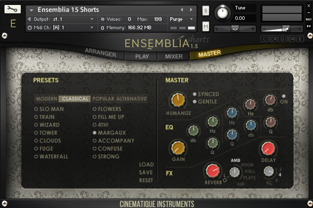

<?xml version="1.0" encoding="UTF-8"?><rss version="2.0"
	xmlns:content="http://purl.org/rss/1.0/modules/content/"
	xmlns:wfw="http://wellformedweb.org/CommentAPI/"
	xmlns:dc="http://purl.org/dc/elements/1.1/"
	xmlns:atom="http://www.w3.org/2005/Atom"
	xmlns:sy="http://purl.org/rss/1.0/modules/syndication/"
	xmlns:slash="http://purl.org/rss/1.0/modules/slash/"
	xmlns:itunes="http://www.itunes.com/dtds/podcast-1.0.dtd"
xmlns:rawvoice="http://www.rawvoice.com/rawvoiceRssModule/"
xmlns:googleplay="http://www.google.com/schemas/play-podcasts/1.0/play-podcasts.xsd"
>

<channel>
	<title>orchestra &#8211; SCOREcastOnline.com</title>
	<atom:link href="." rel="self" type="application/rss+xml" />
	<link>http://www.scorecastonline.com</link>
	<description>Global Community for the Professional Media Composer</description>
	<lastBuildDate>Mon, 19 Jun 2017 08:43:18 +0000</lastBuildDate>
	<language>en-US</language>
	<sy:updatePeriod>hourly</sy:updatePeriod>
	<sy:updateFrequency>1</sy:updateFrequency>
	<generator>https://wordpress.org/?v=4.8</generator>
<!-- podcast_generator="Blubrry PowerPress/7.0.4 beta" mode="advanced" feedslug="feed" -->
	<itunes:summary>Global Community for the Professional Media Composer</itunes:summary>
	<itunes:author>orchestra &#8211; SCOREcastOnline.com</itunes:author>
	<itunes:image href="../../../wp-content/plugins/powerpress/itunes_default.jpg" />
	<itunes:subtitle>Global Community for the Professional Media Composer</itunes:subtitle>
	<image>
		<title>orchestra &#8211; SCOREcastOnline.com</title>
		<url>../../../wp-content/uploads/powerpress/sig-SCO.jpg</url>
		<link>http://www.scorecastonline.com</link>
	</image>
<site xmlns="com-wordpress:feed-additions:1">29563098</site>	<item>
		<title>REVIEW: Ensemblia by Cinematique Instruments</title>
		<link>../../../2016/01/11/ensemblia/</link>
		<comments>../../../2016/01/11/ensemblia/#respond</comments>
		<pubDate>Mon, 11 Jan 2016 23:16:36 +0000</pubDate>
		<dc:creator><![CDATA[Stellita Loukas]]></dc:creator>
				<category><![CDATA[Product reviews]]></category>
		<category><![CDATA[ethnic instruments]]></category>
		<category><![CDATA[gear]]></category>
		<category><![CDATA[kontakt]]></category>
		<category><![CDATA[orchestra]]></category>
		<category><![CDATA[sounds]]></category>
		<category><![CDATA[strings]]></category>

		<guid isPermaLink="false">../../../?p=2271</guid>
		<description><![CDATA[There are many libraries out there that do the ‘big’ sound incredibly well, but what happens when your cue demands a smaller, more intimate sound? Introducing… Ensemblia.]]></description>
				<content:encoded><![CDATA[<p><strong>ENSEMBLIA</strong> by <a href="http://cinematique-instruments.com/page_ensemblia15.php" target="_blank">Cinematique Instruments</a><br />
<strong>219 €/ $245</strong></p>
<p><strong>METALLIQUE</strong><br />
<strong>115 €/ $129</strong></p>
<p><strong>STRINGED</strong><br />
<strong>115 €/ $129</strong></p>
<hr />
<div class="page" title="Page 1">
<div class="layoutArea">
<div class="column">
<p><span class="s1"><a href="http://cinematique-instruments.com/"><b>Cinematique Instruments</b></a></span><span class="s2"> is a Germany-based developer of unique, odd and rare sample libraries. Comprising of a group of composers/producers, the Cinematique Instruments team is highly attuned to the needs of the modern composer and manages to continuously come up with unconventional yet highly usable libraries.</span></p>
<p class="p1"><span class="s2">Their latest flagship product, <a href="http://cinematique-instruments.com/page_ensemblia15.php" target="_blank">Ensemblia</a>, is a unique combination of traditional orchestral and rare modern instruments that is aiming to recreate the sound of the modern chamber orchestra and provide composers with an intuitive tool to create natural-sounding productions.</span></p>
<p class="p1"><span class="s2">Ensemblia is a KONTAKT-based library that runs on the full version of both KONTAKT 4 and 5 and has recently been updated to version 1.5, adding tons of new features and new instruments. What’s more, following the success of the original Ensemblia library, the Cinematique Instruments team is about to release two further variations, Metallique and Stringed. </span></p>
<p class="p1"><span class="s2">So let’s take a look at what this ‘trio’ can add to your arsenal!</span></p>
<h2>General Overview</h2>
<div class="page" title="Page 1">
<div class="layoutArea">
<div class="column">
<p class="p1"><span class="s1">The original library comes with a wealth of sonic colors, from classical orchestral and mallet instruments to odd synths and bowed guitars. But the real beauty of Ensemblia, where all sounds come truly alive, is in the clever Kontakt patch programming. </span></p>
<p class="p1"><span class="s1">The entire library is organized in just two patches: Longs and Shorts. The large variety of presets available are accessed via the well thought-out user interface. </span></p>
<p class="p1"><span class="s1"><b>Longs</b></span></p>
<p class="p1"><span class="s1">The Longs patch allows you to load up to 7 different instruments, each on a dedicated channel strip that gives you individual control over the volume, panning, reverb, and transposition. The magic, however, lies in the Voicing section where you can determine how each chord you play on the keyboard is distributed to the loaded instruments. For example, you can load all four orchestral strings, each on its individual slot, and instruct Ensemblia to assign the lowest note of your chords to the bass, the highest to the violin and the middle ones to the viola and cello.</span></p>
<p class="p1"><span class="s1">As if this isn’t clever enough, the &#8216;Longs&#8217; patch has been programmed in such a way so as to automatically recognize where to assign each new note you play, based on its distance from the previous notes. If, for example, you have a Csus4 chord and the F is assigned to the viola, when you move to a C triad, the E will automatically be played by the viola, too!</span></p>
<p class="p1"><span class="s1">While you are free to mix and match the available instruments to your heart’s delight, the CI team has provided a wealth of presets neatly organized into intuitive categories, to suit all tastes.</span></p>
<p class="p1"></p>
<p class="p1"><span class="s1"><b>Shorts</b></span></p>
<p class="p1"><span class="s1">The Shorts patch is excellent for rhythmic figures and ostinato and works in the exact same way (7 instrument slots with individual controls) but it also features an “Arranger” page that allows you to program the exact rhythm each instrument is playing. The presets provided are again well thought-out and neatly organized and can give you anything from dark and frantic to light and atmospheric. </span></p>
<p class="p1"><span class="s1">In both patches, a comprehensive “Mixer” section allows you to shape your sound to taste and make it as subtle or as overpowering as you wish!</span></p>
<p class="p1"></p>
</div>
</div>
</div>
</div>
</div>
</div>
<div class="page" title="Page 1">
<div class="layoutArea">
<div class="column">
<p>&nbsp;</p>
<h2>Ensemblia &#8220;<span class="s1"><b>Metallique&#8221;</b></span></h2>
</div>
</div>
</div>
<div class="page" title="Page 4">
<div class="layoutArea">
<div class="column">
<p class="p1"><span class="s1">Based on the same principles as the original Ensemblia library, Ensemblia Metallique comprises of a large range of metallic mallet instruments (anything and everything from vibraphone to a salad bowl!), all accessible via a “Shorts” patch which allows you to mix and match instruments, program your own rhythms and further shape your sound via the Mixer section.</span></p>
<p class="p1"></p>
<h2 class="p1">Ensemblia &#8220;Stringed&#8221;</h2>
<p class="p1"><span class="s1">The Stringed variation of Ensemblia brings together all the rare and odd string instruments the CI team has ever recorded: autoharp, monochord, kantele, lute, hammered dulcimer, zither and many more. Since these are mostly plucked instruments, Ensemblia Stringed comprises of just the “Shorts” patch, but this is enough to satisfy even the most demanding tastes.</span></p>
<p class="p1"></p>
<p class="p3">
</div>
</div>
</div>
<div class="page" title="Page 4">
<div class="layoutArea">
<div class="column">
<h2></h2>
<h2>Final Observations</h2>
</div>
</div>
</div>
<div class="page" title="Page 5">
<div class="layoutArea">
<div class="column">
<p class="p1"><span class="s1">There is an unwritten rule-of-thumb that the smaller the ensemble you are composing/orchestrating for the more careful you have to be when choosing voicings, voice leading, doublings, etc. This is one of the reasons why it is said that writing for a string quartet, for example, is much harder than writing for a full string orchestra. </span></p>
<p class="p1"><span class="s1">The same is true for sample libraries — large and ‘epic’ ensembles are often easier to make sound realistic but small and intimate are harder. There are many libraries out there that do the ‘big’ sound incredibly well, but what happens when your cue demands a smaller, more intimate sound? </span></p>
<p class="p1"><span class="s1">This is where Ensemblia excels. It is a library that has clearly been designed with the modern composer in mind. It comes to fill a ‘void’ in the sample library market and it does so incredibly well. Ensemblia offers a large variety of sonic possibilities in an extremely well recorded and programmed package. Added with its beautiful interface, and you have an easy to find your way around the library and create the exact sound you are after. </span></p>
</div>
</div>
</div>
<hr />
<p><strong>ENSEMBLIA</strong> by <a href="http://cinematique-instruments.com/page_ensemblia15.php" target="_blank">Cinematique Instruments</a><br />
<strong>219 €/ $245</strong></p>
<p><strong>METALLIQUE</strong><br />
<strong>115 €/ $129</strong></p>
<p><strong>STRINGED</strong><br />
<strong>115 €/ $129</strong></p>
]]></content:encoded>
			<wfw:commentRss>../../../2016/01/11/ensemblia/feed/</wfw:commentRss>
		<slash:comments>0</slash:comments>
	<post-id xmlns="com-wordpress:feed-additions:1">2271</post-id>	</item>
		<item>
		<title>SCOREcast 053: Sacred Score Postmortem &#8211; Back to the Future</title>
		<link>../../../2015/12/03/scorecast-053-sacred-score-postmortem-back-to-the-future/</link>
		<comments>../../../2015/12/03/scorecast-053-sacred-score-postmortem-back-to-the-future/#respond</comments>
		<pubDate>Thu, 03 Dec 2015 21:08:47 +0000</pubDate>
		<dc:creator><![CDATA[SCO Editorial Staff]]></dc:creator>
				<category><![CDATA[The SCOREcast Podcast Show]]></category>
		<category><![CDATA[orchestra]]></category>
		<category><![CDATA[orchestration]]></category>
		<category><![CDATA[podcast show]]></category>
		<category><![CDATA[sacred cow]]></category>

		<guid isPermaLink="false">../../../?p=2265</guid>
		<description><![CDATA[The boys devote their second Sacred Score Postmortem to a real-time rip-roaring ride through Silvestri's breathtaking action/adventure masterpiece BACK TO THE FUTURE.]]></description>
				<content:encoded><![CDATA[<p><center><iframe style="border: none;" src="//html5-player.libsyn.com/embed/episode/id/3994257/height/320/width/684/theme/standard/direction/no/autoplay/no/autonext/no/thumbnail/yes/preload/no/no_addthis/no/" width="684" height="320" scrolling="no" allowfullscreen="allowfullscreen"></iframe></center><br />
Last November, Deane and Brian took on the great James Horner… and got a ton of email for it. Not against taking on Horner, but in favor of their next autopsy victim being the legendary Alan Silvestri. 2015 marks the 30th anniversary of the release of BACK TO THE FUTURE and the boys devote their second Sacred Score Postmortem to a real-time rip-roaring ride through Silvestri&#8217;s breathtaking action/adventure masterpiece. Also, in a rare full-tilt rant, Brian says the F-word for the first time on the show. Well, there&#8217;s other important stuff, too… but… ahem… BRIAN SAYS THE F-WORD FOR THE FIRST TIME ON THE SHOW!!!!</p>
<p>&nbsp;</p>
<h1>Where to Listen</h1>
<h3><a title="SCOREcast at iTunes" href="https://itunes.apple.com/us/podcast/the-scorecast-podcast-show/id683848476" target="_blank">iTunes</a></h3>
<h3><a title="SCOREcast at Stitcher Radio" href="http://app.stitcher.com/browse/feed/28885/episodes" target="_blank">Stitcher Radio<br />
</a></h3>
<p>&nbsp;</p>
<h1>Shownotes</h1>
<ol>
<li><a href="http://www.hmmawards.com/hmma-winners/" target="_blank">Hollywood Music in Media Awards (HMMA)</a></li>
<li><a href="http://www.billboard.com/articles/business/6649208/the-dept-of-justice-said-to-be-considering-a-baffling-new-rule-change-for" target="_blank">DOJ Considering Song Licensing Rule Change</a></li>
<li><a href="http://www.alansilvestri.com/" target="_blank">AlanSilvestri.com</a><em><br />
</em></li>
<li><a href="http://www.omnimusicpublishing.com/" target="_blank">Omni Music Publishing</a> &#8211; BTTF conductor scores</li>
</ol>
<p>&nbsp;</p>
<h1>On-Air Questions</h1>
<p>Have a question or a comment you&#8217;d like addressed on-air? Send Deane and Brian an email at <a href="mailto:scorecastonline@gmail.com" target="_blank">scorecastonline@gmail.com</a>.</p>
<div>
<p>*<em>Note: By submitting your question via email, you are hereby granting SCOREcastOnline.com permission to re-broadcast/re-read your message on the air in a future episode of the SCOREcast Podcast Show. However, SCOREcastOnline.com makes no guarantee that your email message will be used in a broadcast.</em></p>
</div>
]]></content:encoded>
			<wfw:commentRss>../../../2015/12/03/scorecast-053-sacred-score-postmortem-back-to-the-future/feed/</wfw:commentRss>
		<slash:comments>0</slash:comments>
	<post-id xmlns="com-wordpress:feed-additions:1">2265</post-id>	</item>
		<item>
		<title>SCOREcast 047: Sacred Score Postmortem &#8211; Star Trek II: The Wrath of Khan</title>
		<link>../../../2014/11/25/scorecast-047-sacred-score-postmortem-star-trek-ii-the-wrath-of-khan/</link>
		<comments>../../../2014/11/25/scorecast-047-sacred-score-postmortem-star-trek-ii-the-wrath-of-khan/#respond</comments>
		<pubDate>Wed, 26 Nov 2014 05:53:45 +0000</pubDate>
		<dc:creator><![CDATA[SCO Editorial Staff]]></dc:creator>
				<category><![CDATA[The SCOREcast Podcast Show]]></category>
		<category><![CDATA[orchestra]]></category>
		<category><![CDATA[orchestration]]></category>
		<category><![CDATA[podcast show]]></category>
		<category><![CDATA[sacred cow]]></category>

		<guid isPermaLink="false">../../../?p=2200</guid>
		<description><![CDATA[Deane and Brian risk the wrath of the SCOREcast listener base to dissect and discuss James Horner's iconic 1982 score for "Star Trek II: The Wrath of Khan"]]></description>
				<content:encoded><![CDATA[<p><center><iframe style="border: none;" src="//html5-player.libsyn.com/embed/episode/id/3203431/height/320/width/684/theme/standard/direction/no/autoplay/no/autonext/no/thumbnail/yes/preload/no/no_addthis/no/" width="684" height="320" scrolling="no" allowfullscreen="allowfullscreen"></iframe></center>Some things you just don&#8217;t screw with: Pumpkin pie, Mom&#8217;s famous Thanksgiving stuffing, who carves the turkey at dinnertime. You also don&#8217;t jack around with sacred cow film scores… a memo that Deane and Brian clearly missed as they talk scene-by-scene through one of the most beloved film scores of all time, James Horner&#8217;s &#8220;Star Trek II: The Wrath of Khan&#8221;. Also, David Saunders, SCOREcast&#8217;s Director of Global Community, stops by to announce the new SCOREcast: Amsterdam community.</p>
<p>Today&#8217;s episode is sponsored by <strong><a title="Groove3" href="http://groove3.com" target="_blank">Groove3.com</a></strong>. Get Groove3&#8217;s Annual All Access Pass during their Big November sale for only $99 (a fifty dollar savings), which gets you a full year of complete access to 900+ hours of high-end training on any DAW and just about every audio music production product you can think of.</p>
<p>&nbsp;</p>
<h1>Where to Listen</h1>
<h3><a title="SCOREcast at iTunes" href="https://itunes.apple.com/us/podcast/the-scorecast-podcast-show/id683848476" target="_blank">iTunes</a></h3>
<h3><a title="SCOREcast at Stitcher Radio" href="http://app.stitcher.com/browse/feed/28885/episodes" target="_blank">Stitcher Radio<br />
</a></h3>
<p>&nbsp;</p>
<h1>Shownotes</h1>
<ol>
<li><a title="SCOREcast Global Community Chapters" href="../../../community" target="_blank">SCOREcast Global Chapter Communities</a></li>
<li><a title="Star Trek II: The Wrath of Khan at WIKIpedia" href="http://en.wikipedia.org/wiki/Star_Trek_II:_The_Wrath_of_Khan" target="_blank">Star Trek II: The Wrath of Khan</a> at WIKIpedia.com<em><br />
</em></li>
</ol>
<p>&nbsp;</p>
<h1>On-Air Questions</h1>
<p>Have a question or a comment you&#8217;d like addressed on-air? Send Deane and Brian an email at <a href="mailto:scorecastonline@gmail.com" target="_blank">scorecastonline@gmail.com</a>.</p>
<div>
<p>*<em>Note: By submitting your question via email, you are hereby granting SCOREcastOnline.com permission to re-broadcast/re-read your message on the air in a future episode of the SCOREcast Podcast Show. However, SCOREcastOnline.com makes no guarantee that your email message will be used in a broadcast.</em></p>
</div>
]]></content:encoded>
			<wfw:commentRss>../../../2014/11/25/scorecast-047-sacred-score-postmortem-star-trek-ii-the-wrath-of-khan/feed/</wfw:commentRss>
		<slash:comments>0</slash:comments>
	<post-id xmlns="com-wordpress:feed-additions:1">2200</post-id>	</item>
		<item>
		<title>SPOTLIGHT ON: Cinesamples&#8217; CinePerc Part 4: AUX</title>
		<link>../../../2013/12/26/spotlight-on-cinesamples-cineperc-part-4-aux/</link>
		<comments>../../../2013/12/26/spotlight-on-cinesamples-cineperc-part-4-aux/#respond</comments>
		<pubDate>Fri, 27 Dec 2013 00:09:35 +0000</pubDate>
		<dc:creator><![CDATA[Eanan Patterson]]></dc:creator>
				<category><![CDATA[Spotlight ON]]></category>
		<category><![CDATA[gear]]></category>
		<category><![CDATA[kontakt]]></category>
		<category><![CDATA[orchestra]]></category>
		<category><![CDATA[sample]]></category>
		<category><![CDATA[spotlight on]]></category>
		<category><![CDATA[studio]]></category>

		<guid isPermaLink="false">../../../?p=2136</guid>
		<description><![CDATA[In the fourth and final installment of SCOREcast's overview of Cinesamples' flagship percussion library, CinePerc, Éanán Patterson takes a deep look at CinePerc AUX.]]></description>
				<content:encoded><![CDATA[<p>In the fourth and final installment of SCOREcast&#8217;s SPOTLIGHT ON comprehensive overview of Cinesamples&#8217; flagship percussion library, CinePerc, Éanán Patterson takes a deep look at CinePerc AUX, the series&#8217; most exciting component yet.</p>
<p>For more information and to purchase, please visit the <a href="http://cinesamples.com/products/cineperc/" target="_blank">CINESAMPLES</a> website.</p>
<p>If you cannot see the video below, please click <a href="http://youtu.be/SamEeU-bU0M" target="_blank">here</a>.</p>
<p><iframe src="//www.youtube.com/embed/SamEeU-bU0M?rel=0" height="318" width="566" allowfullscreen="" frameborder="0"></iframe></p>
<h2>Watch the Entire SPOTLIGHT ON CinePerc Series</h2>
<ul>
<li><strong><a href="../../../2013/09/29/spotlight-on-cinesamples-cineperc-part-3-epic" target="_blank">Part 3: CinePerc EPIC</a></strong></li>
<li><a href="../../../2013/09/12/spotlight-on-cinesamples-cineperc-part-2-pro" target="_blank"><strong>Part 2: CinePerc PRO</strong></a></li>
<li><a href="../../../2013/08/27/spotlight-on-cinesamples-cineperc-part-1-core" target="_blank"><strong>Part 1: CinePerc CORE</strong></a></li>
</ul>
]]></content:encoded>
			<wfw:commentRss>../../../2013/12/26/spotlight-on-cinesamples-cineperc-part-4-aux/feed/</wfw:commentRss>
		<slash:comments>0</slash:comments>
	<post-id xmlns="com-wordpress:feed-additions:1">2136</post-id>	</item>
		<item>
		<title>SCOREcast 040: If I Started Today: Sample Libraries</title>
		<link>../../../2013/11/26/scorecast-40-if-i-started-today1/</link>
		<comments>../../../2013/11/26/scorecast-40-if-i-started-today1/#respond</comments>
		<pubDate>Tue, 26 Nov 2013 18:48:33 +0000</pubDate>
		<dc:creator><![CDATA[SCO Editorial Staff]]></dc:creator>
				<category><![CDATA[The SCOREcast Podcast Show]]></category>
		<category><![CDATA[gear]]></category>
		<category><![CDATA[kontakt]]></category>
		<category><![CDATA[library]]></category>
		<category><![CDATA[orchestra]]></category>
		<category><![CDATA[podcast show]]></category>
		<category><![CDATA[sample]]></category>
		<category><![CDATA[studio]]></category>

		<guid isPermaLink="false">../../../?p=2133</guid>
		<description><![CDATA[Composers Éanán Patterson and Ryan Scully join Deane and Brian to pick through the current market of sample libraries in search of which essential tools every beginning composer should own.]]></description>
				<content:encoded><![CDATA[<p><center><iframe style="border: none;" src="//html5-player.libsyn.com/embed/episode/id/3153235/height/320/width/684/theme/standard/direction/no/autoplay/no/autonext/no/thumbnail/yes/preload/no/no_addthis/no/" width="684" height="320" scrolling="no" allowfullscreen="allowfullscreen"></iframe></center><br />
Deane and Brian invite composers Éanán Patterson and Ryan Scully on the show to pick through the current market of sample libraries in search of which essential tools every beginning composer should grab. It&#8217;s an hour and forty minutes of non-stop gear porn as the boys spread the holiday cheer by tempting you with all kinds of potential bank account-ruining goodies&#8230;. otherwise known as SCOREcast Podcast Show #40! Don&#8217;t miss it!</p>
<h1>Where to Listen</h1>
<h3><a title="SCOREcast at iTunes" href="https://itunes.apple.com/us/podcast/the-scorecast-podcast-show/id683848476" target="_blank">iTunes</a></h3>
<h3><a title="SCOREcast at Stitcher Radio" href="http://app.stitcher.com/browse/feed/28885/episodes" target="_blank">Stitcher Radio</a></h3>
<h1></h1>
<h1>Rundown</h1>
<p><em><strong>Digital Audio Workstations (15:00)</strong></em></p>
<ol>
<li><a href="http://www.avid.com/US/products/family/pro-tools" target="_blank">Avid ProTools</a></li>
<li><a href="http://www.steinberg.net/en/products/cubase/start.html" target="_blank">Steinberg Cubase</a></li>
<li><a href="http://www.motu.com/products/software/dp" target="_blank">MOTU Digital Performer</a></li>
<li><a href="http://www.apple.com/logic-pro/" target="_blank">Apple Logic X</a></li>
</ol>
<p><em><strong>Samplers (27:05)</strong></em></p>
<ol>
<li><a href="http://www.native-instruments.com/en/products/komplete/synths-samplers/kontakt-5/" target="_blank">Native Instruments Kontakt</a></li>
<li><a href="http://www.uvi.net/en/software/uvi-workstation.html" target="_blank">UVI/MachFive</a></li>
<li><a href="http://www.soundsonline.com/2013-PLAY" target="_blank">EastWest PLAY</a></li>
<li><a href="http://www.bestservice.de/service.asp/downloads/en" target="_blank">Best Service Engine</a></li>
</ol>
<p><em><strong>Orchestral Strings (30:55)</strong></em></p>
<ol>
<li><a href="http://www.spitfireaudio.com/albion.html" target="_blank">Spitfire Albion</a></li>
<li><a href="http://www.cinematicstrings.com" target="_blank">Cinematic Strings</a></li>
<li><a href="http://audiobro.com" target="_blank">LA Scoring Strings</a> (LASS)</li>
<li><a href="http://www.native-instruments.com/en/products/komplete/orchestral-cinematic/action-strings/" target="_blank">NI Action Strings</a></li>
<li><a href="http://www.sonokinetic.net/products/classical/minimal/" target="_blank">Sonokinetic Vivace, Tutti, Da Capo, Minimal</a></li>
<li><a href="http://cinesamples.com/products/cinestrings/" target="_blank">CineSamples CineStrings</a></li>
</ol>
<p><em><strong>Orchestral Brass (43:27)</strong></em></p>
<ol>
<li><a href="http://cinesamples.com/products/cinebrass/" target="_blank">CineSamples CineBrass CORE/PRO</a></li>
<li><a href="http://www.samplemodeling.com/en/products_trumpet.php" target="_blank">Sample Modeling &#8220;The Trumpet&#8221;</a></li>
<li><a href="http://embertone.com/instruments/chapman-trumpet.php" target="_blank">Embertone &#8220;Chapman Trumpet&#8221;</a></li>
</ol>
<p><em><strong>Workhorse General MIDI (52:55)</strong></em></p>
<ol>
<li><a href="http://www.projectsam.com/Products/Essentials-Series" target="_blank">Project SAM Orchestral Essentials</a></li>
<li><a href="http://www.projectsam.com/Products/Symphobia-Series" target="_blank">Project SAM Symphobia series</a></li>
<li><a href="http://www.soundsonline.com/Goliath" target="_blank">EastWest Goliath</a></li>
<li><a href="http://www.native-instruments.com/en/products/komplete" target="_blank">Native Instruments KOMPLETE</a></li>
</ol>
<p><em><strong>Workhorse Synthesizer (01:01:05)</strong></em></p>
<ol>
<li><a href="http://www.spectrasonics.net/products/omnisphere.php" target="_blank">Spectrasonics Omnisphere</a></li>
<li><a href="http://www.u-he.com/cms/zebra" target="_blank">u-he Zebra</a></li>
<li><a href="http://www.camelaudio.com/Alchemy.php" target="_blank">Camel Audio Alchemy</a></li>
<li><a href="http://www.pluginguru.com" target="_blank">Plugin Guru/John &#8220;Skippy&#8221; Lehmkuhl</a> (virtual synth preset packs)</li>
<li><a href="http://www.theunfinished.co.uk" target="_blank">Matt Bowdler/The Unfinished</a> (virtual synth preset packs)</li>
</ol>
<p>&nbsp;</p>
<p><em><strong>Orchestral Woodwinds (01:06:45)</strong></em></p>
<ol>
<li><a href="http://www.orchestraltools.com/page2/index.php" target="_blank">Orchestral Tools Berlin Woodwinds</a></li>
<li><a href="http://cinesamples.com/products/cinewinds/" target="_blank">CineSamples CineWinds CORE/PRO</a></li>
<li><a href="http://www.soundsonline.com/Symphonic-Orchestra" target="_blank">EastWest Quantum Leap Symphonic Orchestral Woodwinds</a></li>
<li><a href="http://cinesamples.com/products/hollywoodwinds/" target="_blank">CineSamples Hollywood Winds</a></li>
</ol>
<p><em><strong>Ethnic Woodwinds (01:12:25)</strong></em></p>
<ol>
<li>Eduardo Tarilonte&#8217;s Anthology Series</li>
</ol>
<ul>
<ul>
<li><a href="http://www.samplelibraries.com/?page_id=766" target="_blank">Anthology Celtic Wind</a></li>
<li><a href="http://www.samplelibraries.com/?page_id=760" target="_blank">Anthology Spiritual Wind</a></li>
</ul>
</ul>
<p><em><strong>Orchestral Percussion (01:17:20)</strong></em></p>
<ol>
<li><a href="http://cinesamples.com/products/cineperc/" target="_blank">CineSamples CinePerc CORE/PRO</a></li>
<li><a href="http://www.spitfireaudio.com/spitfire-percussion" target="_blank">Spitfire Percussion</a></li>
<li><a href="http://www.projectsam.com/Products/True-Strike-Series" target="_blank">Project SAM True Strike 1</a></li>
</ol>
<p><em><strong>Epic or Acoustic Drums (01:22:15)</strong></em></p>
<ol>
<li><a href="http://www.heavyocity.com/product/damage/" target="_blank">Heavyocity Damage</a></li>
<li><a href="http://www.toontrack.com/ezdrummerline.asp" target="_blank">Toontrack EZDrummer/Superior Drummer</a></li>
<li><a href="http://www.spectrasonics.net/products/stylusrmx.php" target="_blank">Spectrasonics Stylus RMX</a></li>
<li><a href="http://www.native-instruments.com/en/products/komplete/drums/studio-drummer/overview/the-drummer/" target="_blank">Native Instruments Studio Drummer</a></li>
<li><a href="http://www.soundiron.com/instruments/percussion/apocalypse/" target="_blank">SoundIron Apocalypse Percussion Ensemble 2</a> (APE)</li>
</ol>
<p><em><strong>Workhorse Ethnic Suite/Collection (01:32:53)</strong></em></p>
<ol>
<li><a href="http://www.samplelibraries.com/?page_id=598" target="_blank">Eduardo Tarilonte&#8217;s Forest Kingdom II</a></li>
<li><a href="http://www.samplelibraries.com/?page_id=933" target="_blank">Eduardo Tarilonte&#8217;s ERA Medieval Legends</a></li>
<li><a href="http://www.sonokinetic.net" target="_blank">Sonokinetic Collection</a></li>
</ol>
<p><em><strong>Epic Choir/Vocal (01:38:28)</strong></em></p>
<ol>
<li><a href="http://www.soundiron.com/instruments/choirs/" target="_blank">SoundIron Olympus Choral Collection</a></li>
<li><a href="http://8dio.com/instrument/requiem-professional/" target="_blank">8Dio Requiem Professional</a></li>
<li><a href="http://8dio.com/instrument-category/solo-vocals/" target="_blank">8Dio Solo Vocals</a></li>
</ol>
<p>&nbsp;</p>
<h1>Featured Composer: Stefan French</h1>
<p>Stefan French is a Dublin-based film composer providing original music for film, television and a variety of other media. Stefan has also gained recognition as a copyist, an arranger, a music editor and a music supervisor. As a producer, he worked on the album &#8216;Another Day of Life&#8217; by Irish songwriter Adrian Mannering and the song &#8216;Lovers&#8217; was featured on the RTE Radio 1 program &#8216;Roots Freeway&#8217; in early 2012. He is currently working again as producer with another Irish artist for an upcoming release.</p>
<p><a href="http://www.stefanfrench.com" target="_blank">http://www.stefanfrench.com</a></p>
<p><a href="https://soundcloud.com/stefanfrench" target="_blank">https://soundcloud.com/stefanfrench</a></p>
<h1></h1>
<h1>On-Air Questions</h1>
<p>Have a question or a comment you&#8217;d like addressed on-air? Send Deane and Brian an email at <a href="mailto:scorecastonline@gmail.com" target="_blank">scorecastonline@gmail.com</a>.</p>
<div>
<p>*<em>Note: By submitting your question via email, you are hereby granting SCOREcastOnline.com permission to re-broadcast/re-read your message on the air in a future episode of the SCOREcast Podcast Show. However, SCOREcastOnline.com makes no guarantee that your email message will be used in a broadcast.</em></p>
</div>
]]></content:encoded>
			<wfw:commentRss>../../../2013/11/26/scorecast-40-if-i-started-today1/feed/</wfw:commentRss>
		<slash:comments>0</slash:comments>
	<post-id xmlns="com-wordpress:feed-additions:1">2133</post-id>	</item>
		<item>
		<title>SPOTLIGHT ON: Cinesamples&#8217; CinePerc Part 3: EPIC</title>
		<link>../../../2013/09/29/spotlight-on-cinesamples-cineperc-part-3-epic/</link>
		<comments>../../../2013/09/29/spotlight-on-cinesamples-cineperc-part-3-epic/#respond</comments>
		<pubDate>Sun, 29 Sep 2013 19:19:55 +0000</pubDate>
		<dc:creator><![CDATA[Eanan Patterson]]></dc:creator>
				<category><![CDATA[Spotlight ON]]></category>
		<category><![CDATA[gear]]></category>
		<category><![CDATA[kontakt]]></category>
		<category><![CDATA[orchestra]]></category>
		<category><![CDATA[sample]]></category>
		<category><![CDATA[spotlight on]]></category>
		<category><![CDATA[studio]]></category>

		<guid isPermaLink="false">../../../?p=2124</guid>
		<description><![CDATA[SCOREcast's SPOTLIGHT ON team gets "epic" with this third in our four-part series on Cinesamples' flagship percussion library, CinePerc EPIC.]]></description>
				<content:encoded><![CDATA[<p>SCOREcast&#8217;s SPOTLIGHT ON team gets epic with this third in our four-part series on Cinesamples&#8217; flagship percussion library, CinePerc. Éanán Patterson and David Saunders pop open the hood on CinePerc EPIC.</p>
<p>For more information and to purchase, please visit the <a href="http://cinesamples.com/products/cineperc/" target="_blank">CINESAMPLES</a> website.</p>
<p>If you cannot see the video below, please click <a href="http://youtu.be/O4FErF6T2MU" target="_blank">here</a>.</p>
<p><iframe src="//www.youtube.com/embed/O4FErF6T2MU?rel=0" height="318" width="566" allowfullscreen="" frameborder="0"></iframe></p>
]]></content:encoded>
			<wfw:commentRss>../../../2013/09/29/spotlight-on-cinesamples-cineperc-part-3-epic/feed/</wfw:commentRss>
		<slash:comments>0</slash:comments>
	<post-id xmlns="com-wordpress:feed-additions:1">2124</post-id>	</item>
		<item>
		<title>SPOTLIGHT ON: Cinesamples&#8217; CinePerc Part 2: PRO</title>
		<link>../../../2013/09/12/spotlight-on-cinesamples-cineperc-part-2-pro/</link>
		<comments>../../../2013/09/12/spotlight-on-cinesamples-cineperc-part-2-pro/#respond</comments>
		<pubDate>Thu, 12 Sep 2013 15:45:14 +0000</pubDate>
		<dc:creator><![CDATA[Eanan Patterson]]></dc:creator>
				<category><![CDATA[Spotlight ON]]></category>
		<category><![CDATA[gear]]></category>
		<category><![CDATA[kontakt]]></category>
		<category><![CDATA[orchestra]]></category>
		<category><![CDATA[sample]]></category>
		<category><![CDATA[spotlight on]]></category>
		<category><![CDATA[studio]]></category>

		<guid isPermaLink="false">../../../?p=2118</guid>
		<description><![CDATA[Éanán Patterson and George Shaw take a look inside CinePerc PRO in part two of our series on CINESAMPLES' "CinePerc" percussion library.]]></description>
				<content:encoded><![CDATA[<p>SCOREcast&#8217;s SPOTLIGHT ON team goes deep in this second of a four-part series on Cinesamples&#8217; flagship percussion library, CinePerc. In this installment, Éanán Patterson and George Shaw take a look inside CinePerc PRO.</p>
<p>For more information and to purchase, please visit the <a href="http://cinesamples.com/products/cineperc/" target="_blank">CINESAMPLES</a> website.</p>
<p>If you cannot see the video below, please click <a href="http://youtu.be/Y7adYRUPVfI" target="_blank">here</a>.<br />
<iframe src="http://www.youtube.com/embed/Y7adYRUPVfI?rel=0" height="318" width="566" frameborder="0"></iframe></p>
]]></content:encoded>
			<wfw:commentRss>../../../2013/09/12/spotlight-on-cinesamples-cineperc-part-2-pro/feed/</wfw:commentRss>
		<slash:comments>0</slash:comments>
	<post-id xmlns="com-wordpress:feed-additions:1">2118</post-id>	</item>
		<item>
		<title>SPOTLIGHT ON: Cinesamples&#8217; CinePerc Part 1: CORE</title>
		<link>../../../2013/08/27/spotlight-on-cinesamples-cineperc-part-1-core/</link>
		<comments>../../../2013/08/27/spotlight-on-cinesamples-cineperc-part-1-core/#respond</comments>
		<pubDate>Tue, 27 Aug 2013 20:17:24 +0000</pubDate>
		<dc:creator><![CDATA[Eanan Patterson]]></dc:creator>
				<category><![CDATA[Spotlight ON]]></category>
		<category><![CDATA[gear]]></category>
		<category><![CDATA[kontakt]]></category>
		<category><![CDATA[orchestra]]></category>
		<category><![CDATA[sample]]></category>
		<category><![CDATA[spotlight on]]></category>
		<category><![CDATA[studio]]></category>

		<guid isPermaLink="false">../../../?p=2115</guid>
		<description><![CDATA[SCOREcast's SPOTLIGHT ON team goes deep in this first of a four-part series on Cinesamples' flagship percussion library, CinePerc.]]></description>
				<content:encoded><![CDATA[<p>SCOREcast&#8217;s SPOTLIGHT ON team goes deep in this first of a four-part series on Cinesamples&#8217; flagship percussion library, CinePerc. Éanán Patterson and Johnny Knittle take you inside on a comprehensive walkthrough of the first module, CinePerc CORE.</p>
<p>For more information and to purchase, please visit the <a href="http://cinesamples.com/products/cineperc/" target="_blank">CINESAMPLES</a> website.</p>
<p>If you cannot see the video below, please click <a href="http://youtu.be/mU5vpm0Dki0" target="_blank">here</a>.<br />
<iframe src="http://www.youtube.com/embed/mU5vpm0Dki0?rel=0" height="318" width="566" frameborder="0"></iframe></p>
]]></content:encoded>
			<wfw:commentRss>../../../2013/08/27/spotlight-on-cinesamples-cineperc-part-1-core/feed/</wfw:commentRss>
		<slash:comments>0</slash:comments>
	<post-id xmlns="com-wordpress:feed-additions:1">2115</post-id>	</item>
		<item>
		<title>SCO &#8220;Betweenisode&#8221;: Inside Sonokinetic</title>
		<link>../../../2013/08/26/special-podcast-inside-sonokinetic/</link>
		<comments>../../../2013/08/26/special-podcast-inside-sonokinetic/#respond</comments>
		<pubDate>Mon, 26 Aug 2013 18:12:48 +0000</pubDate>
		<dc:creator><![CDATA[SCO Editorial Staff]]></dc:creator>
				<category><![CDATA[The SCOREcast Podcast Show]]></category>
		<category><![CDATA[kontakt]]></category>
		<category><![CDATA[orchestra]]></category>
		<category><![CDATA[podcast show]]></category>
		<category><![CDATA[sample]]></category>

		<guid isPermaLink="false">../../../?p=2113</guid>
		<description><![CDATA[In this special episode of the SCOREcast Podcast Show, Deane Ogden sits down with Rob Van den Berg and Son Thomsen, co-founders of Sonokinetic, for a peek inside their company.]]></description>
				<content:encoded><![CDATA[<p><center><iframe style="border: none;" src="//html5-player.libsyn.com/embed/episode/id/3153236/height/320/width/684/theme/standard/direction/no/autoplay/no/autonext/no/thumbnail/yes/preload/no/no_addthis/no/" width="684" height="320" scrolling="no" allowfullscreen="allowfullscreen"></iframe></center><br />
In this special episode of the SCOREcast Podcast Show, Deane Ogden sits down with Rob Van den Berg and Son Thomsen, co-founders of Sonokinetic — makers of the popular Tutti, Vivace and Da Capo sample libraries — to talk about their design philosophy, what they have coming up, and how they deal with their critics. Rob and Son also give SCOREcasters an exclusive peek into their next major release, <em>Minimal</em>.</p>
<h1>Where Else to Listen</h1>
<h3><a title="SCOREcast at iTunes" href="https://itunes.apple.com/us/podcast/the-scorecast-podcast-show/id683848476" target="_blank">iTunes</a></h3>
<h3><a title="SCOREcast at Stitcher Radio" href="http://app.stitcher.com/browse/feed/28885/episodes" target="_blank">Stitcher Radio</a></h3>
<h1></h1>
<h1>Rundown</h1>
<ol>
<li><a href="http://www.sonokinetic.net" target="_blank">Sonokinetic.com</a></li>
</ol>
<h1>On-Air Questions</h1>
<p>Have a question or a comment you&#8217;d like addressed on-air? Send Deane and Brian an email at <a href="mailto:scorecastonline@gmail.com" target="_blank">scorecastonline@gmail.com</a>.</p>
<div>
<p>*<em>Note: By submitting your question via email, you are hereby granting SCOREcastOnline.com permission to re-broadcast/re-read your message on the air in a future episode of the SCOREcast Podcast Show. However, SCOREcastOnline.com makes no guarantee that we&#8217;ll use your email message in a broadcast.</em></p>
</div>
]]></content:encoded>
			<wfw:commentRss>../../../2013/08/26/special-podcast-inside-sonokinetic/feed/</wfw:commentRss>
		<slash:comments>0</slash:comments>
	<post-id xmlns="com-wordpress:feed-additions:1">2113</post-id>	</item>
	</channel>
</rss>
